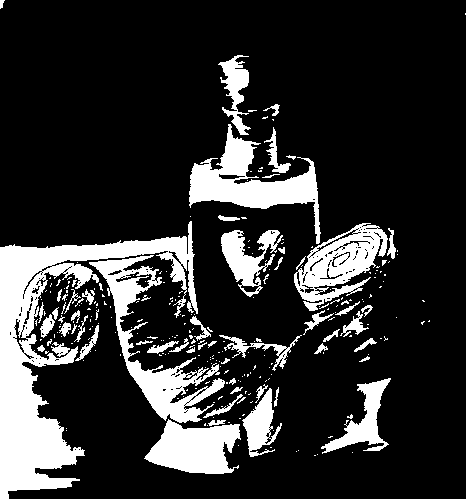

Potion of healing

Many consider the potion of healing one of the most important
potions for any fledgling alchemist to learn and I have to agree. You
never know when a giant chameleon will attack you in the dead of night
looking for a delicious gnome sized snack, leaving you half dead.shudders
But fear not this simple potion, made with easy to aquire ingrediants will
bring you back from the brink time and time again.
ingredients
- 3 tbsp Honey
- 1 Moth Cacoon
- 1 cup Juniper berries
- 7 Blue Xylith mushrooms
- 1 apple
Brewing Directions
- Core and slice the apple and blue mushrooms
- Mash apple slices, mushrooms and Juniper berries into a pulp
- add the honey then stir adding in a splash of water
- bring 3 cups of water to a boil in the cauldron
- pour in the mixed honey apple and mushrooms
- stir twice clockwise and thrice counterclock wise
- drop in the cacoon and count to 113
- pour potion into flask
- cheat death
home